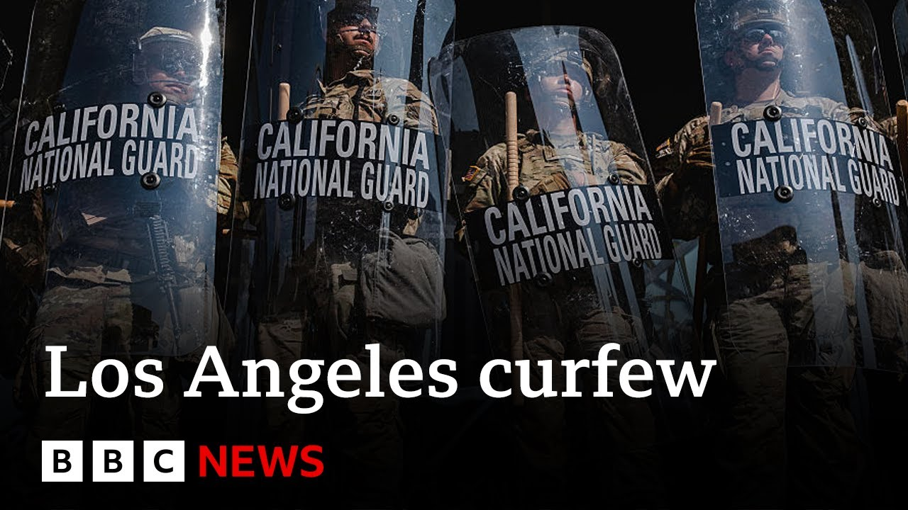

【洛杉矶宵禁开始，加州州长抨击特朗普“煽动”抗议 | BBC新闻】
Summary: A curfew is enforced in downtown LA amid ongoing immigration protests, as California Governor Gavin Newsom criticizes President Trump for militarizing the streets with federal troops, accusing him of inflaming tensions. Protests have escalated, leading to clashes and arrests, while local authorities attempt to regain control.
摘要： 洛杉矶市中心实施宵禁，移民抗议持续；加州州长加文·纽瑟姆谴责特朗普总统派遣联邦军队加剧紧张局势。抗议升级引发冲突与逮捕，地方当局试图恢复秩序。

⏱️ Estimated Reading Time: 15 min
📚 六级生词 📚 雅思生词 📚 托福生词 📚 专八生词 📚 SAT生词 📚 考研生词 📚 GRE生词 📚 高考生词 📚 视频里的生词
[Music] We start News Day in the United States where a curfew has just come into effect in downtown LA as protests over immigration raids continue for a fifth day.
[音乐] 我们开启美国新闻日，洛杉矶市中心刚刚实施宵禁，针对移民突袭的抗议已持续五天。
In the last hour, California Governor Gavin Newsome has said he doesn't want the streets of his state militarized by the country's armed forces.
过去一小时内，加州州长加文·纽瑟姆表示，他不希望该州街道被国家武装力量军事化。
It comes as the federal government has sent National Guard and Marines to quell the protests.
此前联邦政府已派遣国民警卫队和海军陆战队镇压抗议。
The Department of Homeland Security confirmed that those troops will be providing protection for immigration agents during raids.
国土安全部证实，这些部队将为突袭中的移民执法人员提供保护。
Now, here is part of Governor Governor Nuome's had to say a moment ago.
以下是纽瑟姆州长稍早前讲话的部分内容。
Like many states, California is no stranger to this sort of unrest.
与许多州一样，加州对这类骚乱并不陌生。
We manage it regularly and with our own law enforcement.
我们通常依靠自己的执法部门处理。
But this again was different.
但这次情况不同。
What then ensued was a use of tear gas, flashbang grenades, rubber bullets, federal agents detaining people and undermining their due process rights.
随后发生了催泪瓦斯、闪光弹、橡皮子弹的使用，联邦特工拘留民众并剥夺其正当程序权利。
Donald Trump, without consulting California law enforcement leaders, commandeered 2,000 of our state's National Guard members to deploy on our streets illegally and for no reason.
特朗普未经咨询加州执法部门，便非法且无理由征调本州2000名国民警卫队成员部署街头。
This brazen abuse of power by a sitting president inflamed a combustible situation, putting our people, our officers, and even our National Guard at risk.
现任总统这一无耻的权力滥用激化了本已易燃的局势，危及民众、警员甚至国民警卫队安全。
That's when the downward spiral began.
局势由此急转直下。
He doubled down on his dangerous National Guard deployment by fanning the flames even harder.
他变本加厉煽动局势，进一步强化危险的国民警卫队部署。
And the president, he did it on purpose.
总统此举是蓄意的。
Let's go live now to Los Angeles where our correspondent Carl Nasmin is following this story for us.
现在连线洛杉矶记者卡尔·纳斯明，他将为我们跟进报道。
Uh Carl, the curfew went into effect a few minutes ago.
卡尔，宵禁几分钟前已生效。
Tell us what the situation is like where you are.
请描述你所在区域的现状。
Yeah, that's an 8:00 p.m. curfew.
这是一项晚8点开始的宵禁。
So, we're about a couple minutes into it now.
目前刚实施几分钟。
We are in that zone where there are severe restrictions in place.
我们所在区域实施了严格限制。
If you were out on the streets, you would be subject to arrest for most people in this area.
该区域大多数人若外出将面临逮捕。
And you can take a look behind me.
请看我身后。
There is a very big line of of police officers here.
大批警察列队待命。
This is California Highway Patrol.
这是加州公路巡警。
You can see those batons at the ready.
可见他们已举起警棍。
And what we've been told is that they're now ready to any moment now begin to march forward and clear the streets here of anybody who's still left on the streets in this area of downtown Los Angeles.
据告知，他们随时准备推进，清空洛杉矶市中心该区域所有滞留人员。
Something that the mayor was stressing was this is a small area.
市长强调这是一小块区域。
This is about a a one square mile zone of downtown Los Angeles, of course, which is already a small area of the city.
约一平方英里的洛杉矶市中心区域，本就属于城市中的小范围。
So emphasizing, you know, this isn't martial law.
他强调这并非戒严。
This isn't something where no one will be out on the streets in the entire city.
并非全城禁止外出。
But as you can see, taking this very seriously here, a large police presence.
但可见警方极为重视，部署了大量警力。
And most of those demonstrators that we've seen even in pockets, even in small gatherings throughout the day, have now dissipated.
白天零星聚集的示威者现已散去。
And there's very few people left in the streets.
街上几乎无人滞留。
It's just media right now.
目前仅有媒体在场。
We do have an exception uh to be out here.
我们获准在此报道。
I'm just going to look down that way and and very empty streets there as well.
望向那边，街道同样空旷。
So, we're going to be waiting here, Steve, and we want to just see how this curfew does go into effect, what kind of uh reaction it gets from anyone that is left out in the streets.
我们将在此观察宵禁实施效果及可能出现的街头反应。
But this is something that was announced by the mayor of Los Angeles earlier on today.
这是洛杉矶市长今日早些时候宣布的措施。
And this is clearly an attempt to try to gain control of the situation, especially as you can tell, we're only a few minutes away from sunset.
显然旨在控制局势，尤其日落将至。
And that's when we've seen some of those troublemakers really come out and start to wreak a bit of havoc across the city.
我们曾目睹滋事者此时出动并在全城制造混乱。
Yeah, K, you've been out on the streets for us for the last few days.
卡尔，过去几日你一直在街头报道。
Just to remind us of how events have unfolded and and indeed escalated over the last few days that have now culminated and led to this application of of a curfew.
请回顾事件如何升级至实施宵禁。
Well, it was interesting because earlier we saw a mirror image of something that we saw on Sunday night and that was a group of protesters making their way down onto the freeway which passes right through downtown Los Angeles, the 101 freeway.
有趣的是，早前场景与周日夜晚如出一辙：抗议者涌入贯穿市中心的101号高速公路。
They briefly again blocked traffic on on both directions uh until police were able to get down there, usher them away.
他们短暂双向封路，直至警方驱散。
Luckily, nobody was hurt.
所幸无人受伤。
That could be a dangerous situation.
当时情况危险。
But you know, we saw these very chaotic scenes on Sunday where protesters managed to occupy parts of the freeway for about an hour.
周日抗议者曾占据高速路约一小时，场面混乱。
Uh it took a lot of effort from police to get them out of there.
警方费尽周折才将其清离。
Several arrests were made.
多人被捕。
Then 67 people arrested just in that incident today.
仅今日该事件就有67人被捕。
And these are the kinds of scenes obviously that that they want to avoid here and try to get visual control over the city.
当局显然希望避免此类场景，争取城市管控权。
They don't want any more scenes playing out.
不愿再看到类似事件。
And you know, I think there's a bit of a messaging battle here too.
此外还存在舆论交锋。
We saw two different addresses by two leaders of California, the mayor of Los Angeles and then the governor of California denouncing the actions by President Trump.
加州两位领导人——洛杉矶市长与州长分别谴责特朗普的行动。
And then we've heard President Trump saying that he wants to see law and order in the city and he believes that his actions of deputizing and sending in National Guard troops as well as beginning to send in hundreds of active duty Marines.
而特朗普称要恢复城市法治，认为派遣国民警卫队及数百名现役海军陆战队有助于平息事态。
He thinks that those actions help to uh to start to calm things down.
他相信这些行动能缓和局势。
But it definitely seems like right now this is the biggest action we've seen from the local officials here to really gain the upper hand.
但显然地方官员此次采取了最大力度行动以掌握主动权。
And again, we're waiting and watching as this line of California Highway Patrol officers stands by.
我们正观察加州公路巡警的待命队列。
And we'll see if they begin to move in.
等待其是否开始推进。
And there's likely similar scenes playing out in different areas, different boundaries of where this curfew is set.
宵禁范围内其他区域可能也出现类似场景。
Again, a onem radius in downtown Los Angeles.
重申，宵禁范围为洛杉矶市中心一英里半径。
Actually, Steve, just before I let you go, I could tell you, can you can you see that?
史蒂夫，结束前请注意——看到吗？
Right there, we're getting a cell phone alert and this is telling everybody in the area.
手机收到公共安全警报，通知该区域所有人。
It's a public safety alert saying that the city of Los Angeles has declared a curfew.
洛杉矶市已宣布宵禁。
It's now officially in place from 8:00 p.m. to 6:00 a.m.
正式时间为晚8点至早6点。
So, everybody in this area right now getting that text message for people to know that it's now a curfew zone.
该区域所有人正接收此短信，知悉已进入宵禁状态。
Kyle, thanks very much for getting us up to speed with those latest details now that the curfew has been uh put into place.
凯尔，感谢提供宵禁实施后的最新进展。
Kasp there on the streets of Los Angeles.
卡尔在洛杉矶街头报道。
US President Donald Trump says the pro protests in downtown LA against immigration raids are an assault on peace and public order.
美国总统特朗普称洛杉矶市中心反对移民突袭的抗议是对和平与公共秩序的冲击。
During a visit to North Carolina, the president doubled down on deploying more National Guard troops and Marines to the city.
访问北卡罗来纳州期间，总统坚持向该市增派国民警卫队和海军陆战队。
As long as we have the military there, uh the protest won't mean anything.
只要军队驻守，抗议将毫无意义。
Last night, if we weren't there, they would have burned down the city.
若昨夜无军队，他们可能焚毁城市。
But they did not a lot of damage other than they broke up a lot of concrete looking for weapons.
但他们仅破坏混凝土搜寻武器，未造成更大损失。
You know those are weapons.
那些混凝土块就是武器。
If that hits somebody in the head, the person's dead.
击中头部会致命。
You know that, right?
明白吗？
What do you mean by a very heavy force will be met uh with the protest?
“以强力应对抗议”是何意？
Oh, the military will be very heavy for us.
军队将以压倒性力量应对。
That's I'm very proud to tell you that they might as well turn around.
我很自豪地说，抗议者不如掉头离开。
They're wasting their time.
他们在浪费时间。
Uh some of them will end up in jail for a long period of time.
部分人将面临长期监禁。
Now joining us for more on this from LA to discuss the legal implications of deploying the US military to the streets of the city is Jody David Armor, a professor of law at University of Southern California.
现连线洛杉矶南加州大学法学教授乔迪·戴维·阿莫尔，探讨美军部署街头的法律影响。
Uh Jody, thanks very much for your time today.
乔迪，感谢接受采访。
Now, we heard earlier from Governor Gavin Newsome criticizing President Trump.
此前纽瑟姆州长批评了特朗普总统。
He called his actions a brazen abuse of power.
他称此举为无耻的权力滥用。
Is he right or is there a legal reasoning for the Trump administration to deploy a military to the streets of LA?
他是否正确？特朗普政府部署军队是否有法律依据？
Well, frankly, there is uh quite a bit of precedent that gives a president the power to invoke, for example, the insurrection act.
事实上，总统有权援引《叛乱法案》等，早有先例。
It was done uh for example in 1957.
如1957年，地方当局拒绝学校融合。
Um the um local authorities, governor and others did not want to integrate schools.
州长等人阻止黑人儿童入学。
Did not want black children coming into the schools.
艾森豪威尔总统联邦化国民警卫队，命令其停止干预。
Dwight Eisenhower federalized the National Guard, told them to stand down and stop interfering with black kids making it to the schools, and then he sent troops in to walk those black girls and boys into those schools and sit them in the seats.
随后派军队护送黑人学生入校就座。
And that happened also in the South and places like um Alabama and Mississippi in the early 60s.
60年代初阿拉巴马、密西西比等南方州也发生过。
So there is precedent for what he's doing.
因此特朗普的行动有先例可循。
And you know his position would be I have a national mandate and here are some local authorities who are refusing to robustly enforce my national mandate.
他的立场是：我拥有国家授权，而地方当局拒绝强力执行。
And so just like back there in 1957 when Eisenhower had to federalize the national guards and make sure that the local authorities conform to his wishes and will the national mandate.
正如1957年艾森豪威尔联邦化国民警卫队以确保地方服从国家意志。
I'm just doing the same kind of thing.
我不过在做同样的事。
So he's going to he's going to try to spin the narrative for sure that way.
他必将如此塑造叙事。
But the circumstances are incredibly different in this aspect, aren't they?
但此次情况截然不同，对吗？
Well, yeah.
是的。
Yeah.
当时是为推动平等价值。
You know, there you had uh somebody trying to promote and protect values of equality, right?
国家共识是黑人应与白人平等。
And saying that there was a national consensus that black citizens should be treated equally with white citizens and we will send in federal troops to enforce that.
联邦军队介入以强制执行。
Um there's a lot there's not that clear consensus on the values that Trump is trying to promote or vindicate by bringing in the um agents rather than allowing the process of protest the normal process of protest and you know free speech to run its course as it has been in many other instances without the federal officers coming in.
而特朗普试图通过派遣特工（而非允许正常抗议与言论自由进程）推广的价值，缺乏明确共识。
Well, a curfew has now been put into place.
目前宵禁已实施。
In your view, is that the right course of action for local authorities to take?
你认为地方当局此举正确吗？
Well, a lot of local authorities are going to on the side of safety and too often civil liberties are sacrificed uh for the sake of safety and um so I'm sure that local authorities are going that route, but they have to recognize a lot of ordinary citizens think just as important as safety are their rights to have freedom of movement and not feel like they're in a paramilitary kind of situation.
许多地方当局倾向安全优先，常以牺牲公民自由为代价。我理解其选择，但需意识到许多民众认为行动自由权与安全同等重要，不应陷入准军事状态。